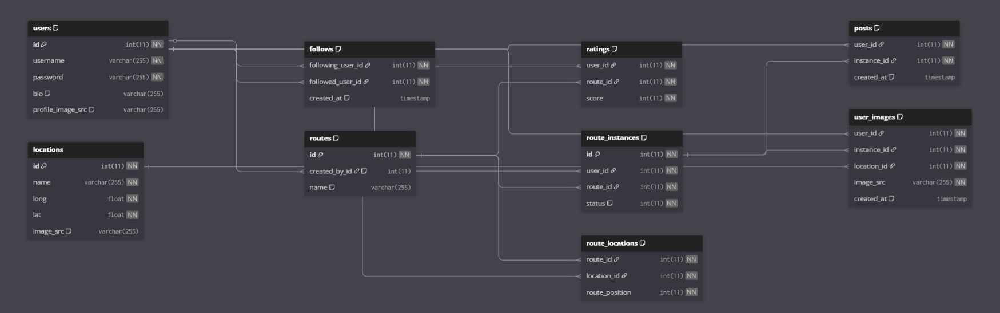
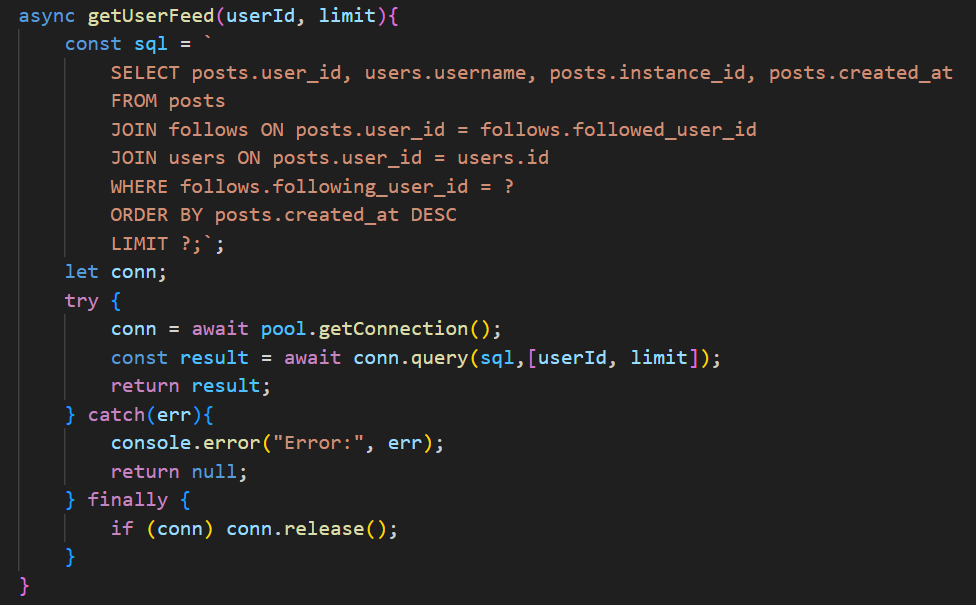
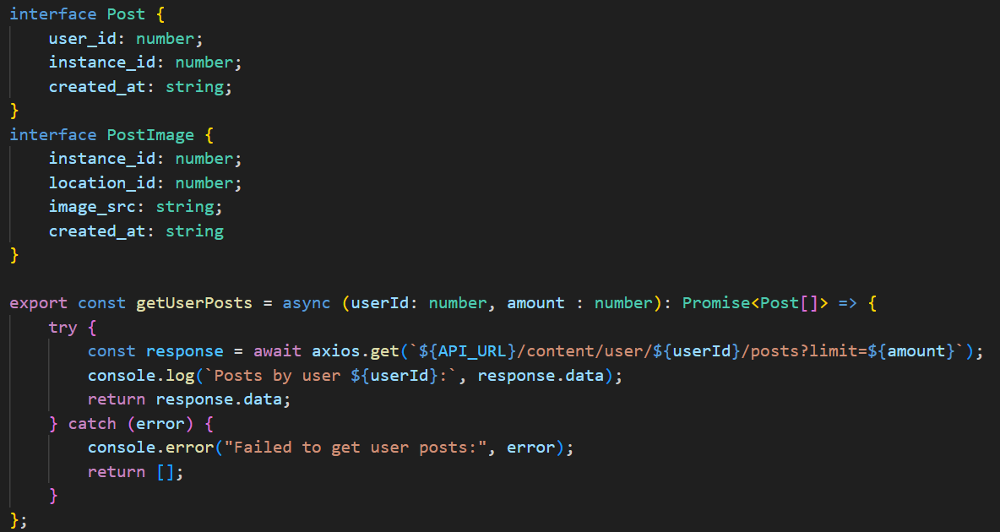

RORY LYONS - WEB APP BACKEND

WEB APP BACKEND
View on Github.
My work on this project consists only of the code located in the backend folder and also of the TypeScript code located in the Components/api folder inside of the frontend folder.
Designing the Database

The first step in developing this web app was creating a schema for the database. I created
this layout before starting work on the codebase to ensure a clean structure for the API. The
schema contains tables for user account data, and a structure for the routes system that I had designed.
The purpose of the app was to be a social media site where users could select predefined walking routes
which would take them to various scenic places in dublin. At each location the user would have the option
to upload an image. Once the walking route had been completed these images would be collected in a post on
their profile feeds.
The locations that routes consisted of were stored in the locations table, while the route_locations table
defined which locations would be a part of a given route. When a user began a walking route the API would create
a new route_instance which would be added to the database. This route would have a status element which ensures
that a user cannot have more than one active route at a time. When a route_instance is finished, the user would
have the option to create a post connected to that instance which would link to the images uploaded as part
of that instance.
Creating the API

The next step was to implement the backend functionality. I split the backend into four sections
for the various routes that the website would require. One was to handle requests related to user
data, one handled the created and updating of the apps routes and route instances, one handled
image uploading and finally one handled content feeds. Each of these four sections were further split
into a routes script, a controller script, and a service script which each handled different parts of
the API's functionality. the routes script contained the various requests that could be made the API, the
controller script controlled how data was processed and what data would be sent back to the user, and finally
the service script would handle the direct interactions with the database.
I also implemented password encryption inside the user service script at this stage for user accounts.
Linking to the Frontend

The final step was linking the frontend to the backend. I created a series of functions in TypeScript
that my collaborators could use to build the functionaliy of the web application. This consisted of
functions which would utilize one or more requests to the API to return data structures that would
fill content on the various pages of the site.
I also implemented image uploading and storage where images
would be sent to the server hosting the backend and be stored in an uploads folder. The file location of that
image would then be stored inside of the database along with information about its upload.
View on Github.